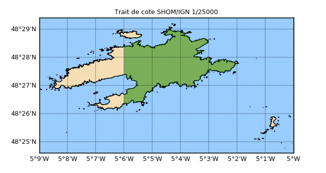

1.3.4.1.1. Traît de côte : lecture de shapefile polygones et tracés¶
Voir : Histolitt map()

Un traît de côte au format shapefile est lu et représenté graphiquement. L’île est récupérée sous forme d’un polygone, puis une partie seulement est coloriée en rouge.
# Creer une carte se limitant a Ouessant avec fond de mer
from vacumm.misc.plot import map2
from vacumm.misc.color import ocean, land
from vcmq import code_base_name
m = map2(lat=(48.41, 48.49), lon=(-5.15, -5), show=False,
fillcontinents=False, drawcoastlines=False, figsize=(5.5, 4),
bgcolor=ocean, left=.12, top=.9)
# Fichier au 1/25000eme avec selection de la zone de la carte
from vacumm.bathy.shorelines import Histolitt
coast = Histolitt(m=m) # Chargement
coast.plot(show=False) # Trace
# On travail maintenant sur l'ile
# - creation d'un polygone (voir le tutoriel (*@\ref{lst:misc.grid.polygons}@*))
from _geoslib import Polygon
import numpy as N
select = Polygon(N.array([[-5.1, 48.41], [-5, 48.41], \
[-5, 48.49], [-5.1, 48.49]]))
# - recuperation de l'ile
island = coast.greatest_polygon()
# - sauvegarde de l'ile complete dans un fichier ascii
f = N.savetxt('bathy.shorelines.dat', island.boundary)
# - boucle sur les intersections
import pylab as P
for poly in island.intersection(select):
xx, yy = poly.boundary.transpose() # coordonnees
P.fill(xx, yy, alpha=.5, facecolor='g', linewidth=0) # coloriage
# Fin du trace
from pylab import show, title, close
from vacumm.misc.plot import savefigs
title('Trait de cote SHOM/IGN 1/25000')
savefigs(code_base_name(ext='png'), pdf=True)
close()